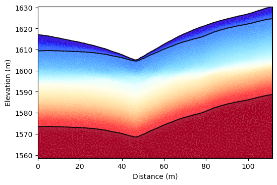
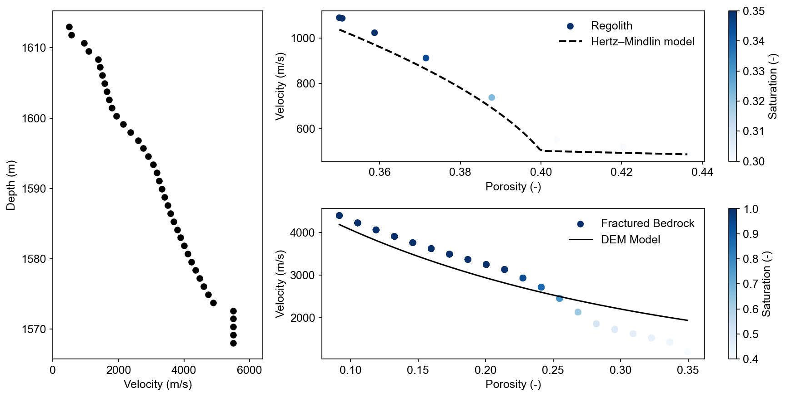
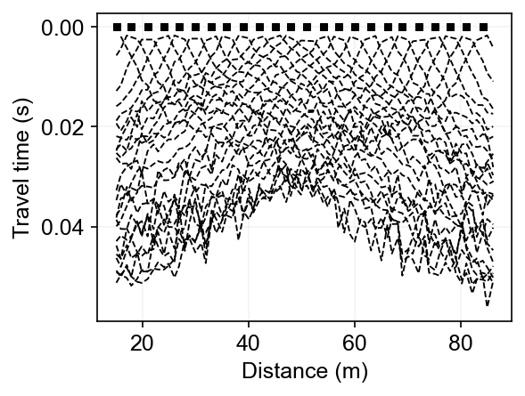
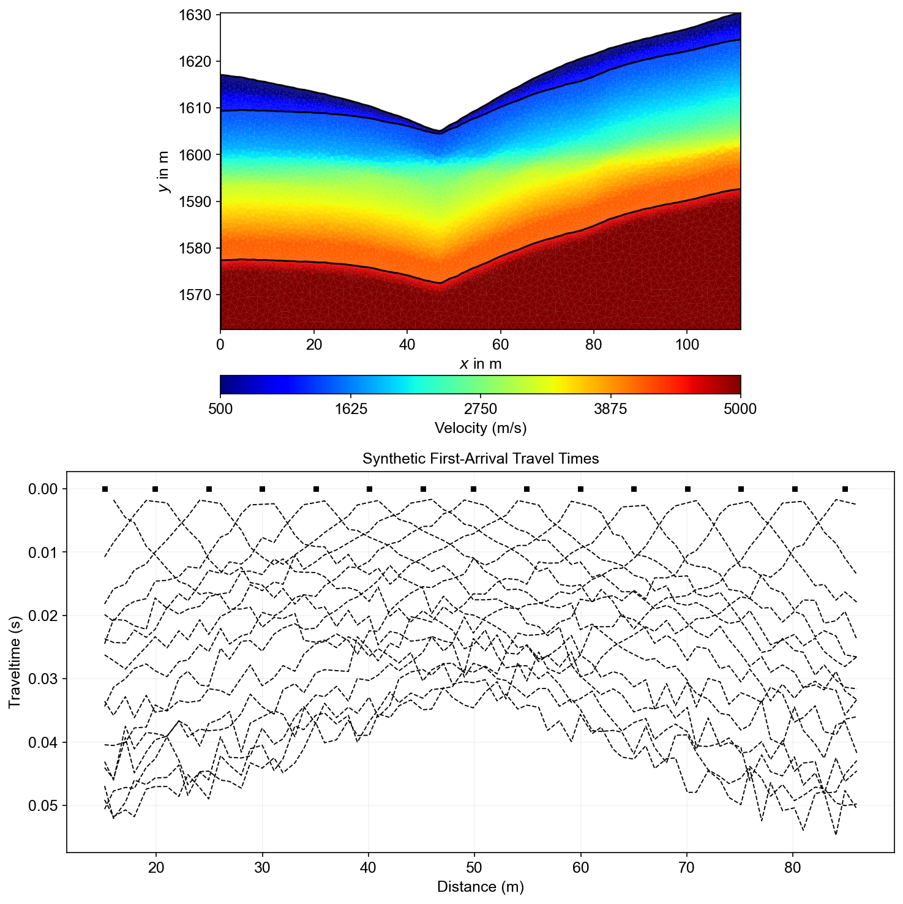

Note
Go to the end to download the full example code.
Ex. Seismic Refraction Tomography (SRT) Forward Modeling#
This example demonstrates seismic refraction tomography forward modeling for watershed structure characterization using PyHydroGeophysX.
The workflow includes: 1. Converting water content to seismic P-wave velocity using rock physics models 2. Creating seismic survey geometry along topographic profiles 3. Forward modeling to generate synthetic travel time data 4. Visualization of velocity models and first-arrival picks 5. One-step integrated workflow from hydrology to seismic measurements
SRT is valuable for determining subsurface structure and bedrock interface geometry, which provides important constraints for hydrogeophysical modeling and interpretation of ERT data.
import os
import sys
import numpy as np
import matplotlib.pyplot as plt
import pygimli as pg
from pygimli.physics import ert
from pygimli.physics import TravelTimeManager
import pygimli.physics.traveltime as tt
from mpl_toolkits.axes_grid1 import make_axes_locatable
# Setup package path for development
try:
# For regular Python scripts
current_dir = os.path.dirname(os.path.abspath(__file__))
except NameError:
# For Jupyter notebooks
current_dir = os.getcwd()
# Add the parent directory to Python path
parent_dir = os.path.dirname(current_dir)
if parent_dir not in sys.path:
sys.path.append(parent_dir)
# Import PyHydroGeophysX modules
from PyHydroGeophysX.core.interpolation import ProfileInterpolator, create_surface_lines
from PyHydroGeophysX.core.mesh_utils import MeshCreator
from PyHydroGeophysX.core.plt_utils import drawFirstPicks
from PyHydroGeophysX.petrophysics.resistivity_models import water_content_to_resistivity
from PyHydroGeophysX.petrophysics.velocity_models import HertzMindlinModel, DEMModel
output_dir = os.path.join(current_dir, "results", "SRT_forward")
seismic_data_dir = os.path.join(current_dir, "data", "Seismic")
os.makedirs(output_dir, exist_ok=True)
os.makedirs(seismic_data_dir, exist_ok=True)
## 1. Follow the workflow to create the mesh and model
# These would be your actual data files
data_dir = os.path.join(current_dir, "data")
# Load domain information from files
# (Replace with your actual file paths)
idomain = np.loadtxt(os.path.join(data_dir, "id.txt"))
top = np.loadtxt(os.path.join(data_dir, "top.txt"))
porosity = np.load(os.path.join(data_dir, "Porosity.npy"))
Water_Content = np.load(os.path.join(data_dir, "Watercontent.npy"))
water_content = Water_Content[5] # in the publication, we used the 50th time step data
print(water_content.shape)
# Step 3: Set up profile for 2D section
# Define profile endpoints
point1 = [115, 70] # [col, row]
point2 = [95, 180] # [col, row]
# Initialize profile interpolator
interpolator = ProfileInterpolator(
point1=point1,
point2=point2,
surface_data=top,
origin_x=569156.2983333333,
origin_y=4842444.17,
pixel_width=1.0,
pixel_height=-1.0,
num_points = 400
)
# Interpolate water content to profile
water_content_profile = interpolator.interpolate_3d_data(water_content)
# Interpolate porosity to profile
porosity_profile = interpolator.interpolate_3d_data(porosity)
## Creating geometry for the seismic refraction survey
# Load structure layers
bot = np.load(os.path.join(data_dir, "bot.npy"))
# Process layers to get structure
structure = interpolator.interpolate_layer_data([top] + bot.tolist())
# Create surface lines
# Indicate the layer for the structure regolith, fractured bedrock and fresh bedrock
top_idx=int(0)
mid_idx=int(4)
bot_idx=int(13)
surface, line1, line2 = create_surface_lines(
L_profile=interpolator.L_profile,
structure=structure,
top_idx=top_idx,
mid_idx=mid_idx,
bot_idx=bot_idx
)
# Create mesh
mesh_creator = MeshCreator(quality=32)
mesh, geom = mesh_creator.create_from_layers(
surface=surface,
layers=[line1, line2],
bottom_depth= np.min(line2[:,1]) - 10 #50.0
)
## Interpolating data to mesh
# marker labels for the layers
marker_labels = [0, 3, 2] # top. mid, bottom layers (example values)
# assign the values for the regolith and fractured bedrock
ID1 = porosity_profile.copy()
ID1[:mid_idx] = marker_labels[0] #regolith
ID1[mid_idx:] = marker_labels[1] # fractured bedrock
# Get mesh centers and markers
mesh_centers = np.array(mesh.cellCenters())
mesh_markers = np.array(mesh.cellMarkers())
porosity_mesh = np.zeros_like(mesh_markers, dtype=float)
wc_mesh = np.zeros_like(mesh_markers, dtype=float)
for i in range(len(marker_labels)):
if i == 2:
# assign the values for the fresh bedrock, since fresh bedrock is no flux boundary and assume the homogeneous as the last layer
ID1[bot_idx] = marker_labels[2] # fractured bedrock # fresh bedrock
# Interpolate porosity to mesh
porosity_temp = interpolator.interpolate_to_mesh(
property_values=porosity_profile,
depth_values=structure,
mesh_x=mesh_centers[:, 0],
mesh_y=mesh_centers[:, 1],
mesh_markers=mesh_markers,
ID=ID1, # Use ID1 to indicate the layers for interpolation
layer_markers = [marker_labels[i]],
)
porosity_mesh[mesh_markers==marker_labels[i]] = porosity_temp[mesh_markers==marker_labels[i]]
# Interpolate water content to mesh
wc_temp = interpolator.interpolate_to_mesh(
property_values=water_content_profile,
depth_values=structure,
mesh_x=mesh_centers[:, 0],
mesh_y=mesh_centers[:, 1],
mesh_markers=mesh_markers,
ID=ID1, # Use ID1 to indicate the layers for interpolation
layer_markers = [marker_labels[i]],
)
wc_mesh[mesh_markers==marker_labels[i]] = wc_temp[mesh_markers==marker_labels[i]]
saturation = wc_mesh / porosity_mesh
## Convert to P wave velocity using petrophysical model
# Initialize velocity models
hm_model = HertzMindlinModel(critical_porosity=0.4, coordination_number=6.0)
dem_model = DEMModel()
# Initialize velocity model
velocity_mesh = np.zeros_like(wc_mesh)
top_mask = (mesh_markers == marker_labels[0])
top_bulk_modulus = 30.0 # GPa
top_shear_modulus = 20.0 # GPa
top_mineral_density = 2650 # kg/m³
top_depth = 1.0 # m
# Get Vp values using Hertz-Mindlin model
Vp_high, Vp_low = hm_model.calculate_velocity(
porosity=porosity_mesh[top_mask],
saturation=saturation[top_mask],
bulk_modulus=top_bulk_modulus,
shear_modulus=top_shear_modulus,
mineral_density=top_mineral_density,
depth=top_depth
)
# Use average of high and low bounds
velocity_mesh[top_mask] = (Vp_high + Vp_low) / 2
mid_mask = (mesh_markers == marker_labels[1])
mid_bulk_modulus = 45.0 # GPa
mid_shear_modulus = 35.0 # GPa
mid_mineral_density = 2670 # kg/m³
mid_aspect_ratio = 0.05
# Get Vp values using DEM model
_, _, Vp = dem_model.calculate_velocity(
porosity=porosity_mesh[mid_mask],
saturation=saturation[mid_mask],
bulk_modulus=mid_bulk_modulus,
shear_modulus=mid_shear_modulus,
mineral_density=mid_mineral_density,
aspect_ratio=mid_aspect_ratio
)
velocity_mesh[mid_mask] = Vp
bot_mask = (mesh_markers == marker_labels[2])
bot_bulk_modulus = 55 # GPa
bot_shear_modulus = 50 # GPa
bot_mineral_density = 2700 # kg/m³
bot_aspect_ratio = 0.04
# Get Vp values using DEM model
_, _, Vp = dem_model.calculate_velocity(
porosity=porosity_mesh[bot_mask],
saturation=saturation[bot_mask],
bulk_modulus=bot_bulk_modulus,
shear_modulus=bot_shear_modulus,
mineral_density=bot_mineral_density,
aspect_ratio=bot_aspect_ratio
)
velocity_mesh[bot_mask] = Vp
print(np.min(velocity_mesh[top_mask]), np.max(velocity_mesh[top_mask]))
print(np.min(velocity_mesh[mid_mask]), np.max(velocity_mesh[mid_mask]))
print(np.min(velocity_mesh[bot_mask]), np.max(velocity_mesh[bot_mask]))
from palettable.lightbartlein.diverging import BlueDarkRed18_18
fixed_cmap = BlueDarkRed18_18.mpl_colormap
fig, axs = plt.subplots(1, 1, figsize=(6, 4))
ax,cbar = pg.show(mesh,velocity_mesh, ax= axs, orientation="horizontal",
cMap=fixed_cmap, showColorBar=True,
xlabel="Distance (m)", ylabel="Elevation (m)",
label='Velocity (m s$^{-1}$)', cMin=500, cMax=5500)
P-Wave Velocity Model from Petrophysical Conversion#
The velocity model shows realistic three-layer structure derived from water content and porosity using rock physics models. Regolith (500-2500 m/s), fractured bedrock (2500-4500 m/s), and fresh bedrock (4500+ m/s) exhibit distinct velocity ranges appropriate for watershed environments.
{kind=link}

import matplotlib.pyplot as plt
import matplotlib as mpl
import numpy as np
import pygimli as pg
# Font settings for publication
mpl.rcParams['font.family'] = 'Arial'
mpl.rcParams['font.size'] = 12
mpl.rcParams['axes.labelsize'] = 12
mpl.rcParams['axes.titlesize'] = 12
mpl.rcParams['xtick.labelsize'] = 12
mpl.rcParams['ytick.labelsize'] = 12
mpl.rcParams['legend.fontsize'] = 12
mpl.rcParams['figure.dpi'] = 150
from scipy.interpolate import griddata
import matplotlib.pyplot as plt
import numpy as np
# First interpolation for the main plot
x1, y1 = np.mgrid[20:21:1j, 1568:1613:40j]
vel = griddata(mesh_centers[:,0:2], velocity_mesh, (x1, y1), method='linear')
po = griddata(mesh_centers[:,0:2], porosity_mesh, (x1, y1), method='linear')
plt.figure(figsize=(12, 6))
# First subplot - narrower left side (spans both rows, 1 column)
plt.subplot2grid((2, 3), (0, 0), rowspan=2, colspan=1)
plt.scatter(vel.ravel(), y1.ravel(), c='k')
plt.xlim([0, 6400])
plt.xlabel('Velocity (m/s)')
plt.ylabel('Depth (m)')
# Second subplot - larger top right position (spans 2 columns)
plt.subplot2grid((2, 3), (0, 1), colspan=2)
# Second interpolation
x1, y1 = np.mgrid[20:21:1j, 1609.2:1613:8j]
vel_1 = griddata(mesh_centers[:,0:2], velocity_mesh, (x1, y1), method='linear')
po_1 = griddata(mesh_centers[:,0:2], porosity_mesh, (x1, y1), method='linear')
sat_1 = griddata(mesh_centers[:,0:2], saturation, (x1, y1), method='linear')
Vp_high, Vp_low = hm_model.calculate_velocity(
porosity=np.linspace(np.nanmin(po_1.ravel()), np.nanmax(po_1.ravel()), 100),
saturation=np.ones(100)*np.nanmin(sat_1.ravel()),
bulk_modulus=top_bulk_modulus,
shear_modulus=top_shear_modulus,
mineral_density=top_mineral_density,
depth=top_depth)
plt.scatter(po_1.ravel(), vel_1.ravel(), c=sat_1.ravel(), vmin=0.30, vmax=0.35, cmap='Blues',label='Regolith')
plt.colorbar(label='Saturation (-)')
plt.plot(np.linspace(np.nanmin(po_1.ravel()), np.nanmax(po_1.ravel()), 100),
(Vp_high + Vp_low) / 2, 'k--', lw=2,label='Hertz–Mindlin model')
plt.legend(frameon=False)
plt.xlabel('Porosity (-)')
plt.ylabel('Velocity (m/s)')
# Third subplot - larger bottom right position (spans 2 columns)
plt.subplot2grid((2, 3), (1, 1), colspan=2)
# Third interpolation
x1, y1 = np.mgrid[20:20:20j, 1578:1609:20j]
vel_2 = griddata(mesh_centers[:,0:2], velocity_mesh, (x1, y1), method='linear')
po_2 = griddata(mesh_centers[:,0:2], porosity_mesh, (x1, y1), method='linear')
sat_2 = griddata(mesh_centers[:,0:2], saturation, (x1, y1), method='linear')
# Get Vp values using DEM model
_, _, Vp_minsat = dem_model.calculate_velocity(
porosity = np.linspace(np.nanmin(po_2.ravel()), np.nanmax(po_2.ravel()), 100),
saturation=np.ones(100)*np.nanmean(sat_2.ravel()),
bulk_modulus=mid_bulk_modulus,
shear_modulus=mid_shear_modulus,
mineral_density=mid_mineral_density,
aspect_ratio=mid_aspect_ratio
)
plt.scatter(po_2.ravel(), vel_2.ravel(), c=sat_2.ravel(), cmap='Blues', vmin=0.4, vmax=1,label='Fractured Bedrock')
plt.plot(np.linspace(np.nanmin(po_2.ravel()), np.nanmax(po_2.ravel()), 100),Vp_minsat,label='DEM Model',c='k')
plt.legend(frameon=False)
plt.xlabel('Porosity (-)')
plt.ylabel('Velocity (m/s)')
plt.colorbar(label='Saturation (-)')
plt.tight_layout()
plt.savefig(os.path.join(output_dir, "velocity_porosity_saturation.tiff"), dpi=300, bbox_inches='tight')
Petrophysical Relationships Analysis#
Multi-panel analysis validates rock physics models: velocity-depth profile (left), Hertz-Mindlin model for regolith showing saturation effects (top right), and DEM model for fractured bedrock (bottom right). Theoretical curves match computed values, confirming realistic petrophysical transformations.
{kind=link}

%% [markdown] ## Short distance seismic survey
################# Seismic data #####################
# Create a synthetic seismic data scheme
xpos = np.linspace(15,15+72 - 1,72)
ypos = np.interp(xpos,interpolator.L_profile,interpolator.surface_profile)
pos = np.hstack((xpos.reshape(-1,1),ypos.reshape(-1,1)))
numberGeophones = 72
shotDistance = 3
sensors = np.linspace(15,15 + 72 - 1, numberGeophones)
scheme = pg.physics.traveltime.createRAData(sensors,shotDistance=shotDistance)
for i in range(numberGeophones):
minusx = np.abs(surface[:,0]-sensors[i])
index = int(np.argmin(minusx))
new_x = surface[index,0]
new_y = surface[index,1]
pos[i, 0] = new_x
pos[i, 1] = new_y
scheme.setSensors(pos)
mgr = TravelTimeManager()
datasrt = mgr.simulate(slowness=1.0 / velocity_mesh, scheme=scheme, mesh=mesh,
noiseLevel=0.05, noiseAbs=0.00001, seed=1334
,verbose=True)
datasrt.save(os.path.join(output_dir, "synthetic_seismic_data.dat"))
# Usage
fig, ax = plt.subplots(figsize=(4, 3))
drawFirstPicks(ax, datasrt)
fig.savefig(os.path.join(output_dir, "synthetic_seismic_data_first_picks_short.tiff"), dpi=300, bbox_inches='tight')
Short Survey First-Arrival Travel Times#
The 72-geophone short survey (72m length) provides high-resolution shallow imaging with dense ray coverage. First-arrival picks show clear velocity layering with direct waves, refracted arrivals, and crossover distances indicating velocity interfaces at shallow depths.
{kind=link}

%% [markdown] ## Long distance seismic survey
numberGeophones = 90
shotDistance = 3
sensors = np.linspace(1,110, numberGeophones)
scheme = pg.physics.traveltime.createRAData(sensors,shotDistance=shotDistance)
# Adapt sensor positions to slope
pos = np.zeros((numberGeophones,2))
for i in range(numberGeophones):
minusx = np.abs(surface[:,0]-sensors[i])
index = int(np.argmin(minusx))
new_x = surface[index,0]
new_y = surface[index,1]
pos[i, 0] = new_x
pos[i, 1] = new_y
scheme.setSensors(pos)
mgr = TravelTimeManager()
datasrt = mgr.simulate(slowness=1.0 / velocity_mesh, scheme=scheme, mesh=mesh,
noiseLevel=0.05, noiseAbs=0.00001, seed=1334
,verbose=True)
datasrt.save(os.path.join(output_dir, "synthetic_seismic_data_long.dat"))
## SRT one step from HM to GM
import os
import numpy as np
import matplotlib.pyplot as plt
import pygimli as pg
# Import PyHydroGeophysX modules
from PyHydroGeophysX.core.interpolation import ProfileInterpolator, create_surface_lines
from PyHydroGeophysX.core.mesh_utils import MeshCreator
from PyHydroGeophysX.Hydro_modular.hydro_to_srt import hydro_to_srt
# 1. Set up output directory
output_dir = os.path.join(current_dir, "results", "srt_example")
os.makedirs(output_dir, exist_ok=True)
# Load your data
data_dir = os.path.join(current_dir, "data")
idomain = np.loadtxt(os.path.join(data_dir, "id.txt"))
top = np.loadtxt(os.path.join(data_dir, "top.txt"))
porosity = np.load(os.path.join(data_dir, "Porosity.npy"))
water_content = np.load(os.path.join(data_dir, "Watercontent.npy"))[5] # orignal Time step is 50
# Set up profile
point1 = [115, 70]
point2 = [95, 180]
interpolator = ProfileInterpolator(
point1=point1,
point2=point2,
surface_data=top,
origin_x=569156.0,
origin_y=4842444.0,
pixel_width=1.0,
pixel_height=-1.0,
num_points=400
)
# Create mesh structure
bot = np.load(os.path.join(data_dir, "bot.npy"))
layer_idx = [0, 4, 12] # Example indices for top, middle, and bottom layers
structure = interpolator.interpolate_layer_data([top] + bot.tolist())
surface, line1, line2 = create_surface_lines(
L_profile=interpolator.L_profile,
structure=structure,
top_idx=layer_idx[0],
mid_idx=layer_idx[1],
bot_idx=layer_idx[2]
)
# Create mesh
mesh_creator = MeshCreator(quality=32)
mesh, geom = mesh_creator.create_from_layers(
surface=surface,
layers=[line1, line2],
bottom_depth=np.min(line2[:,1])-10
)
# Define layer markers
marker_labels = [0, 3, 2] # top, middle, bottom layers
# Rock physics parameters for each layer
vel_parameters = {
'top': {
'bulk_modulus': 30.0, # GPa
'shear_modulus': 20.0, # GPa
'mineral_density': 2650, # kg/m³
'depth': 1.0 # m
},
'mid': {
'bulk_modulus': 50.0, # GPa
'shear_modulus': 35.0, # GPa
'mineral_density': 2670, # kg/m³
'aspect_ratio': 0.05 # Crack aspect ratio
},
'bot': {
'bulk_modulus': 55.0, # GPa
'shear_modulus': 50.0, # GPa
'mineral_density': 2680, # kg/m³
'aspect_ratio': 0.03 # Crack aspect ratio
}
}
mesh_markers = np.array(mesh.cellMarkers())
# 13. Now we call hydro_to_srt with the pre-processed mesh values
synth_data, velocity_mesh = hydro_to_srt(
water_content=water_content, # Use pre-interpolated mesh values
porosity=porosity, # Use pre-interpolated mesh values
mesh=mesh,
profile_interpolator=interpolator,
layer_idx=layer_idx,
structure = structure,
marker_labels=marker_labels,
vel_parameters=vel_parameters,
sensor_spacing=1.0,
sensor_start=15.0,
num_sensors=72,
shot_distance=5,
noise_level=0.05,
noise_abs=0.00001,
save_path=os.path.join(seismic_data_dir, "synthetic_seismic_data.dat"),
mesh_markers=mesh_markers, # Pass the mesh markers directly
verbose=True,
seed=1334
)
# 14. Visualize the results
from PyHydroGeophysX.forward.srt_forward import SeismicForwardModeling
# Create a figure
fig, axes = plt.subplots(2, 1, figsize=(10, 10))
# Plot velocity model
pg.show(mesh, velocity_mesh, ax=axes[0], cMap='jet',
cMin=500, cMax=5000, label='Velocity (m/s)',
xlabel="Distance (m)", ylabel="Elevation (m)")
# Plot first-arrival travel times
SeismicForwardModeling.draw_first_picks(axes[1], synth_data)
axes[1].set_title('Synthetic First-Arrival Travel Times')
plt.tight_layout()
One-Step Integrated Workflow Results#
The integrated hydro-to-seismic workflow produces consistent results: velocity model (top) shows realistic layering from petrophysical conversion, while synthetic travel times (bottom) exhibit clear refraction patterns suitable for tomographic inversion and interface extraction.
{kind=link}

Summary#
This workflow demonstrated complete seismic forward modeling from hydrological inputs to synthetic measurements. Key achievements include realistic velocity models from rock physics, multi-scale survey design, and integrated hydro-geophysical workflows suitable for watershed monitoring applications.